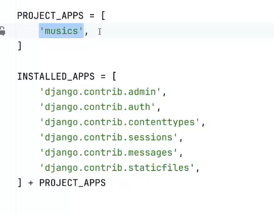
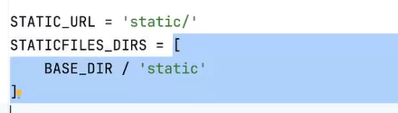

×
setup
pip install django psycopg2
django-admin startproject MusicProject
cd MusicProject
django-admin startapp musicApp
__
settings.py
add 'musicApp' to INSTALLED_APPS
mask SECRET_KEY = os.environ.get('SECRET_KEY', 'dev-secret-key')
mask DATABASES = {
"default": {
"ENGINE": "django.db.backends.postgresql",
"NAME": os.environ.get("DB_NAME"),
"USER": os.environ.get("DB_USER"),
"PASSWORD": os.environ.get("DB_PASSWORD"),
"HOST": os.environ.get("DB_HOST"),
"PORT": os.environ.get("DB_PORT", "5432"),
"OPTIONS": {
"sslmode": "require",
},
}
}

__
add STATICFILES_DIRS:
STATIC_URL = 'static/'
STATICFILES_DIRS = BASE_DIR / 'static'

__
make urls.py in the app that has models (musicApp in this case)
add urlpatterns = []
register in MusicProject.urls.py
urlpatterns = [
path('admin/', admin.site.urls),
path('', include('musicApp.urls') )
]